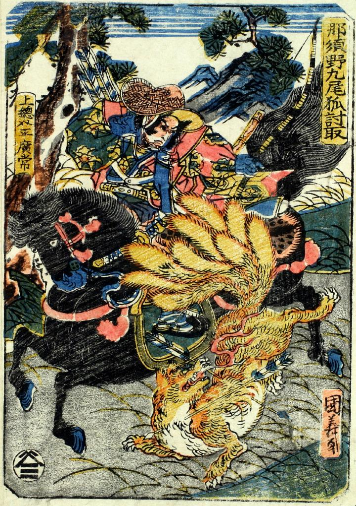

平広常に射かけられる九尾狐。九つに分かれた尾を持ち、口から炎を吐いている。
著作者：国義／出典：親書誌：U426_nichibunken_0087：那須野九尾狐討取；ナスノキュウビノキツネウチトリ／日付：2005／資源識別子：U426_nichibunken_0087_0001_0000
Copyright (c)2010- International Research Center for Japanese Studies, Kyoto, Japan. All rights reserved.